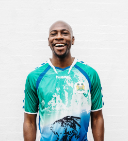

We Work For
We Serve For Peoples


This non-profit organization project will cost approximately $17 million (US) which is equivalent to Rs.120 Crores, $14 million (US), which is Rs.100 Crores for building the structures and $3 million (US), Rs.21 Crores for security system, solar panels, furniture, clothing, linen, books & stationary, high-tech class room equipment, desks, music instrument, science laboratory equipment, library, fans and air-conditioning, TVs and computers, salon equipment, gym equipment, laundry equipment, high-tech kitchen equipment, medical equipment for the clinic, elevators, and accessories. There will be five buildings at the facility; 1) an orphanage, 2) an old-age-home, 3) an ashram, 4) a Vishnu temple, 5) a parking lot, as well as a pond and boundary walls surrounding the complex (5 acres of land).
Indian widows are the ones that suffer the most because of the Hindu belief system. Their culture and religious beliefs make their lives so difficult and painful that it is beyond our Western imagination. These women are poor and uneducated Hindu widows and they are often the victims of both their communities and their own families. They don’t have freedom of choice in food or clothing, and they are forbidden from wearing makeup and jewelry. These women are isolated from everything, including going to social functions in the village. Hindu society believes widows are bad luck; this kind of superstitious belief makes these women's lives more lonely and miserable. Eventually, they become a burden and a headache for their families, so they get rejected and kicked out of their own homes.
Without any financial support these women become homeless and start begging on the streets in front of the temples to survive in Kolkata. There is a widow's pension which is only $5 a month that is provided by the government, but these women don't know where and how to apply; even in Indi, $5 a month is nothing, it is not enough to buy food for two weeks. Finally, most of the widows end up at non-profit shelter in the city of Vindaban, State of Uttar Pradesh, because Vindaban is the birth place of the Hindu God, Lord Krishna. In his last reincarnation, he invited the widows to come to this holy city so they may receive salvation in the after-life and liberation through spirituality.
In our organization, the Old-Age-Home for Widows will be a five story residential building for 200 widows with four rooms per floor; each room will accommodate 20 women, and each woman will have their own bed, closet, desk, and chair, and access to an attached bathroom with four showers, four toilets, and four sinks. Each room will be properly ventilated with many windows, also there will be 6 ceiling fans, and a 55" big screen TV. Our organization will provide everything that is necessary for daily life: food, clothing, linen, shoes, hygiene products, medical treatment, and laundry facility. They will have the opportunity to sing bhajan, and kirtan in the Vishnu temple. If they would like to volunteer, they can provide service in the Ashram, or Orphanage.
There are hundreds of children that live on the streets of Kolkata, India that are homeless and raising themselves. Some children are true orphans that have run away from orphanages because they were physically, mentally, or sexually abused. Others have run away from their homes because they were beaten or abused by their parents, stepparents, or other family members. These runaway children, as young as seven years old from many different states, simply hop on a train without informing their parents or guardians. They come to the big cities for what they believe will be a better life, but instead end up living on the streets. These kids survive by begging, stealing, doing manual labor, or working in the sweatshops. They live completely free from any kind of supervision, don’t go to school, and many of them take drugs. However, they are not safe alone on the streets; they are easy targets of career criminals who use the children for human trafficking, stealing, pick pocketing, selling drugs, committing murders, or even selling their organs. These criminals wait at the train station to observe any new kids arriving on the incoming trains; they want to grab them before the nonprofit organizations that are trying to help them.
India, there are many orphanages that does not provide adequate necessities for the orphan children. The children sleep on the floor on thin mattress. In the morning, all the mattresses are piled up in the corner of the room and the children then use the room to play or hang out. The administration does not provide any furniture at all; children are abused, neglected, and treated very poorly. One toilet and a shower is shared by 20 children or more and they live filthy-dirty and lack necessary hygiene. Unfortunately, there are not many people who speak on behalf of the these children.
However, in our organization, orphan children will be provided everything that is necessary for life, including higher education and field trips. We will create a very nice and comfortable environment, and they will be given tender loving care so that – the children will feel like they are living at home with their rich parents.
Our facility will be much like a resort; it will have attractive modern structures with many small monuments and a lot of different stone statues all over the grounds with a clean and serene environment. There will be beautiful landscaping with vibrant colors, a big pond and a waterfall; the surroundings will feel very quiet, calm and relaxing. All of our buildings will have an elevator access. We want the children to feel happy, content, and loved.
The orphanage we will build, the environment we will create, and the amenities that will be provided, will result in an outstanding facility in India, the building will be a five story residence which will be home to 400 children. Each room will accommodate 20 children, and each child will have their own bed, closet, desk, chair, and access to an attached bathroom with four showers, four toilets, and four sinks. There will be a comfortable distance between each bed so each child has their own space. They will also have a large area in the center of the room to play; children can play on the big balcony as well. Each room will be properly ventilated with many windows and there will be six ceiling fans. For entertainment, there will be a 55" big screen TV on the wall with loudspeakers. Further, the children will have many different toys and games to play with. Our organization will provide everything necessary for daily life: food, clothing, shoes, linen, cosmetics, hygiene products, school, books and stationary, WiFi access, kitchen and dining hall, laundry facility, hair salon, medical clinic, gym facility, prayer room, and 24 hour security. Furthermore, there will be a huge family room where everyone can be together; it can be used for meetings with the House Mother, Divine Soul Rami, or watching TV with her to enjoy some quality time.
Our organization will provide excellent education in English beginning with kindergarten and continuing through junior college. Besides general education, all the children will learn spiritually as well. For the school and college, we will be providing very sophisticated top of the line high-tech teaching equipments; also, there will be a library, music lab, computer lab, and a modern science lab. If any of the kids require special help, we will provide tutoring to make sure they catch up and stay current with the lesson. All the children are equally important to us, so no one gets neglected. Furthermore, on the weekend, we will provide extracurricular activities, such as art, music, singing, dancing, sports, sewing, driving, gardening, cooking, computer skills and variety of field trips. We will prepare them in such a way that they will be ready to face the real world, hold a job, be independent, and a positive contributor to society. In addition, children with higher educational dreams and goals will be provided a tutor to prepare them for SAT, GMAT, and GRE tests, etc. This help will ensure a higher score on their tests which can also lead to scholarships. We will provide guidance to make sure a high percentage of students will be admitted to a reputable university in the United States.
The clinic will have 20 beds, a doctor's check-up room, a nurse's station, and a operating room. All the children will receive yearly check-ups and if a child gets sick, there will be a doctor on-call 24 hours a day. If any children get the flu or a communicable disease, we will separate them from the rest in the clinic until they get better to prevent any spreading. Sick children will get special nutrition based on their needs. We will have an in-house nurse who will take care of them in the clinic 24 hours a day. Furthermore, if there are children with special needs, such as learning disabilities, complex health issues, and mental or psychological issues they will be adequately cared for, as well.
Foreign visitors are welcome from all over the world! Our facility will be much like a resort; however, one of our most important goals is to go green and live organic. In our facility, many resources will come from nature. Beside spirituality, the disciples will learn how to live a clean, pure, and organic life. Further, we will teach stability and they will be trained to let go of negativity, become relaxed, and control their mind and replace negativity with positive energy. The building will be five stories tall, very modern, white color, and elegant looking, but environmentally friendly.
The Sacred Ashram will have 32 deluxe rooms for adults; the deluxe rooms will have a huge window and a small balcony, with 2 beds, 2 night stands, 2 closets, 2 desks, 2 chairs, a ceiling fan, a TV and an attached bathroom. There will be a huge family room for the disciples with a 55" big screen TV to watch, or just to hang out and play music, or a large group of people can have a prayer meeting or sing bhajan on the 1st floor. The Ashram will have a big dining hall on the 2nd floor that serves 3 meals a day, 24 hour WiFi access, and a laundry facility. Furthermore, there will be many class rooms for yoga, meditation, teaching, and healing. If the disciples would like to do volunteer service, they can provide service in the Sacred Ashram, Orphanage, or the Old-Age-Home for Widows.
The Ashram is the setting for the most important rituals, guidance, and teaching which will be provided by guru, Divine Soul Rami. Inspired by our deeply rooted beliefs, it is very conducive to achieving stability, spirituality, calmness and becoming a truly religious person, as well as, experiencing divine love and miracles. People with any religious faith by systematic control of body and mind, organic lifestyle, vegetarian diet, doing daily yoga and meditation regularly, and guided by a superior guru, one can definitely achieve a higher state of religious advancement, super consciousness, and become enlightened. This art and discipline of becoming a more spiritual person is the main objective of staying in the ashram.
In India, the majority of people 85% are Hindus; therefore, in the facility, there will be a Vishnu temple for religious guidance where all the orphan children, widows, ashram disciples, and visitors can sing bhajan, kirtan, and worship together. Rami believes the Vishnu temple will be an exceptional, one-of-a-kind monument; the heart and soul of the facility, an iconic landmark with a traditional look. This fantastic temple will be large enough to facilitate 1000 devotees. People will feel calm and relaxed, and will experience up-lifted minds and souls. There will be a beautiful garden with a pond and waterfall; devotees can sit in the temple, view the garden and meditate peacefully. The Vishnu temple will have a traditional central 150 ft. tall shikhara (pyramid shape roof) with intricate carvings. It's main hall construction will be in stone with ancient architectural style pillars, a big dome, and high ceilings, giving the temple a grandeur look and feel. The ambiance of the magnificent Vishnu temple will promote a spiritual experience that will connect to the universe.
Inspires employees and organizations to support causes they care
about. We do this to bring more resources to the nonprofits that are
changing our world.